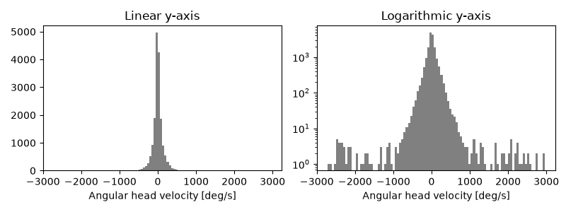
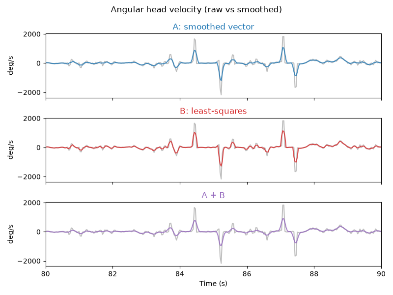
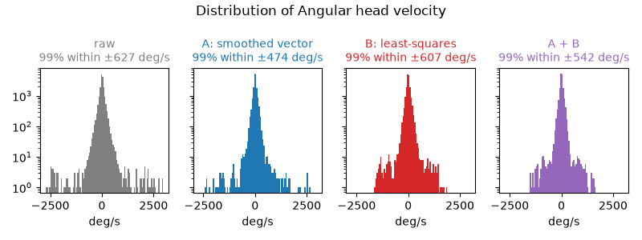
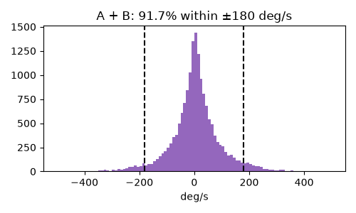
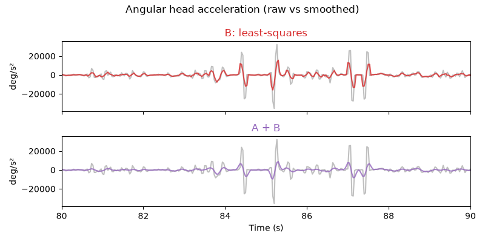

Note
Go to the end to download the full example code or to run this example in your browser via Binder.
Compute angular velocity and acceleration#
Compute the head angular velocity and acceleration.
Imports#
# For interactive plots: install ipympl with `pip install ipympl` and uncomment
# the following line in your notebook
# %matplotlib widget
import xarray as xr
from matplotlib import pyplot as plt
from movement import sample_data
from movement.filtering import (
filter_by_confidence,
interpolate_over_time,
rolling_filter,
)
from movement.kinematics import (
compute_angular_acceleration,
compute_angular_velocity,
compute_forward_vector,
)
<xarray.core.options.set_options object at 0x7f683c95f610>
Before you start#
This example builds on the
Compute head direction example, which explains
how movement represents orientations as vectors and as angles.
We recommend reading that one first.
Here we focus on how fast an orientation changes over time, i.e. its angular velocity and angular acceleration. While this example uses the head direction of a freely moving mouse, the same functions can be used with any 2D orientation represented as vectors.
Preparing the data#
As in Compute head direction, we use a single-mouse dataset consisting of a top-down video of a mouse exploring an elevated plus maze.
ds = sample_data.fetch_dataset("DLC_single-mouse_EPM.predictions.h5")
print(f"fps: {ds.fps}")
ds
fps: 30.0
Next we remove low-confidence predictions, apply a
rolling median filter to suppress
tracking outliers, and interpolate to fill short gaps in the data.
Each operation here overwrites the position variable in the dataset.
We select that variable and drop the “individual” dimension for convenience,
as we are only working with one mouse here.
# preprocessing
ds["position"] = filter_by_confidence(
ds.position,
ds.confidence,
threshold=0.9,
)
ds["position"] = rolling_filter(
ds.position,
window=5,
min_periods=2,
statistic="median",
)
ds["position"] = interpolate_over_time(ds.position, max_gap=2)
# remove the "individual" dimension
position = ds.position.drop_vars("individual").squeeze("individual")
position
We compute the head vector from the left and right ear keypoints, as in the head direction example.
head_vector = compute_forward_vector(
position,
left_keypoint="left_ear",
right_keypoint="right_ear",
camera_view="top_down",
)
head_vector
The head_vector array contains unit vectors (i.e. of length 1). It has
the same number of time points as the position array it was derived
from, and two spatial dimensions (x and y).
Compute angular velocity#
We compute the angular head velocity (AHV) by passing the head_vector
array to compute_angular_velocity().
We get a 1D time-varying array in radians per time unit (here seconds).
To return angular velocity in degrees per unit time instead, pass
in_degrees=True.
We can also assign metadata attributes to describe the variable and
its units; these are useful for plotting.
ahv_deg = compute_angular_velocity(head_vector, in_degrees=True)
ahv_deg.attrs["long_name"] = "Angular head velocity"
ahv_deg.attrs["units"] = "deg/s"
ahv_deg
Let’s plot two histograms of angular head velocities: one with a linear y-axis and one with a logarithmic y-axis. We expect the distribution to be symmetric about zero and heavy-tailed. The logarithmic scale makes the tails easier to visualise.
N_BINS = 100
fig, axes = plt.subplots(1, 2, figsize=(8, 3), sharex=True)
ahv_deg.plot.hist(bins=N_BINS, ax=axes[0], color="grey")
ahv_deg.plot.hist(bins=N_BINS, ax=axes[1], yscale="log", color="grey")
axes[0].set_title("Linear y-axis")
axes[1].set_title("Logarithmic y-axis")
plt.tight_layout()
plt.show()

Sign convention
Positive angular velocities correspond to rotations from the positive x-axis towards the positive y-axis. In image coordinates (y pointing down) with a top-down camera, that is a clockwise rotation on screen.
We see a few values beyond \(\pm\) 1000 deg/s, and some even beyond \(\pm\) 2000 deg/s. Mice can turn their heads very quickly, but some of these extreme values are likely due to noise.
Next we’ll look at ways to smooth the AHV estimate.
Smooth angular velocity#
The angular velocity signal is noisy, because differentiation amplifies
small frame-to-frame jitter. The preprocessing we have already applied to the
position data helps with that, but may not be sufficient. Here we look at
two further places to smooth the data:
A. Pre-smoothing. Smooth head_vector with a rolling mean before
differentiating. Since head_vector contains unit vectors, averaging them
is the correct way to average directions: the averaged vector points in the
mean direction of the window, also known as the circular mean of the head
angles. The averaged vectors are generally shorter than 1, but this does
not matter, since only their direction is used. Averaging the angles
themselves would fail near \(\pm\pi\); for example, 179° and -179° would
average to 0° (pointing the opposite way) instead of 180°.
B. Windowed estimate. Passing window (an odd number of
frames) to compute_angular_velocity() fits a
straight line to the head angle within a centred window of that length
and returns its slope. This least-squares estimate requires
data to be uniformly sampled in time.
The estimate is only computed where the full window contains valid
(non-NaN) values. As a result, the first and last window // 2 frames,
and any frames whose window contains a missing value, are assigned NaN.
Note
Both approaches widen existing gaps in the data. By default,
rolling_filter() returns NaN wherever its
window contains a NaN, and so does the least-squares estimate.
Each gap therefore grows by window // 2 frames on each side, per
step. Pass min_periods to rolling_filter to relax this.
Let’s compare the two approaches, and their combination. Feel free to
experiment with WINDOW_VEC, WINDOW_LSQ and TIME_SLICE to see how
they affect the results.
WINDOW_VEC = 5 # in frames, used for pre-smoothing the vector
WINDOW_LSQ = 5 # in frames, used for the least-squares slope estimation
TIME_SLICE = slice(80, 90) # in seconds, controls what's plotted
head_vector_smooth = rolling_filter(head_vector, WINDOW_VEC, statistic="mean")
ahv_presmoothed = compute_angular_velocity(head_vector_smooth, in_degrees=True)
ahv_lsq = compute_angular_velocity(
head_vector, window=WINDOW_LSQ, in_degrees=True
)
ahv_presmoothed_lsq = compute_angular_velocity(
head_vector_smooth, window=WINDOW_LSQ, in_degrees=True
)
label_to_da = {
"raw": ahv_deg,
"A: smoothed vector": ahv_presmoothed,
"B: least-squares": ahv_lsq,
"A + B": ahv_presmoothed_lsq,
}
colors = ["grey", "tab:blue", "tab:red", "tab:purple"]
fig, axes = plt.subplots(3, 1, figsize=(8, 6), sharex=True, sharey=True)
for i, ax in enumerate(axes):
title, da = list(label_to_da.items())[i + 1]
color = colors[i + 1]
ahv_deg.sel(time=TIME_SLICE).plot(ax=ax, color=colors[0], alpha=0.5)
da.sel(time=TIME_SLICE).plot(ax=ax, color=color, alpha=0.8)
ax.set_xlim(TIME_SLICE.start, TIME_SLICE.stop)
ax.set_title(title, color=color)
ax.set_xlabel("")
ax.set_ylabel(ahv_deg.attrs["units"])
axes[-1].set_xlabel("Time (s)")
fig.suptitle(f"{ahv_deg.attrs['long_name']} (raw vs smoothed)")
fig.tight_layout()
plt.show()

All three approaches damp extreme values, while preserving the timing of the main peaks and troughs. To compare how much they damp, let’s look at the distribution of angular head velocities before and after smoothing.
raw_range = (ahv_deg.min().item(), ahv_deg.max().item()) # same bins for all
fig, axes = plt.subplots(1, 4, figsize=(8, 3), sharex=True, sharey=True)
for i, ax in enumerate(axes):
title, da = list(label_to_da.items())[i]
da.plot.hist(
ax=ax, bins=N_BINS, range=raw_range, yscale="log", color=colors[i]
)
p99 = abs(da).quantile(0.99, skipna=True).item()
ax.set_title(
f"{title}\n99% within ±{p99:.0f} deg/s", color=colors[i], fontsize=10
)
ax.set_xlabel(ahv_deg.attrs["units"])
fig.suptitle(f"Distribution of {ahv_deg.attrs['long_name']}")
fig.tight_layout()
plt.show()

The two approaches reduce the overall spread of the distribution by a similar amount, but differ in the tails. Pre-smoothing (A) damps typical values more (see the range containing 99% of values in each title), but some extreme values beyond \(\pm\) 2000 deg/s survive. The least-squares estimate (B) removes these, but damps typical values less. Combining both (A + B) removes the extreme values too, while damping typical values more than B alone.
Centred vs trailing window estimate
movement uses centred windows, so smoothing does not shift the
signal in time.
Some applications, however, require a derivative estimate based on a
window ending at each time point. We can obtain this trailing estimate
by shifting the centred estimate forward by window // 2 frames:
ahv_lsq_trailing = ahv_lsq.shift(time=WINDOW_LSQ // 2)
Compare to published values#
Hennestad et al. (2021) analysed published data of freely moving mice (Laurens et al., 2019) and found that about 90% of all head rotations are slower than 180 deg/s. As a sanity check, let’s compute the same fraction for the A + B estimate, ignoring missing values.
Note
The experimental setups differ, so we only expect a rough match.
In Laurens et al., mice foraged in a circular arena (50 cm diameter),
and head direction was tracked from two LEDs mounted on the headstage.
Here, a mouse explores an elevated plus maze, and head direction is
derived from ear keypoints estimated by DeepLabCut and prepocessed
with movement.
abs_ahv = abs(ahv_presmoothed_lsq)
frac_below_180 = (abs_ahv < 180).sum() / abs_ahv.notnull().sum()
print(f"AHV below 180 deg/s: {frac_below_180.item():.1%}")
AHV below 180 deg/s: 91.7%
This closely matches the published value, which suggests that the smoothed estimate is physiologically plausible. Let’s visualise this on a histogram of the A + B estimate, this time with a linear y-axis. To focus on the bulk of the distribution, we only plot values within \(\pm\) 500 deg/s.
fig, ax = plt.subplots(figsize=(5, 3))
ahv_presmoothed_lsq.plot.hist(
ax=ax, bins=N_BINS, range=(-500, 500), color=colors[3]
)
for x in (-180, 180):
ax.axvline(x, color="black", linestyle="--")
ax.set_title(f"A + B: {frac_below_180.item():.1%} within ±180 deg/s")
ax.set_xlabel(ahv_deg.attrs["units"])
fig.tight_layout()
plt.show()

Compute angular acceleration#
compute_angular_acceleration() takes the same
arguments as compute_angular_velocity().
If window is supplied, it fits a quadratic to the head angle over the
window and returns its second derivative. For this, window must be
odd and greater than 2.
Differentiating twice amplifies frame-to-frame jitter even more than
differentiating once, so the raw angular acceleration is often dominated by
noise. Smoothing is therefore even more important here than for angular
velocity. Let’s compare the raw estimate with the least-squares estimate (B)
and its combination with pre-smoothing (A + B). Feel free to experiment with
WINDOW_LSQ_ACC to see how it affects the results.
WINDOW_LSQ_ACC = 7 # in frames, used for the least-squares quadratic fit
aha_deg = compute_angular_acceleration(head_vector, in_degrees=True)
aha_deg.attrs["long_name"] = "Angular head acceleration"
aha_deg.attrs["units"] = "deg/s²"
aha_lsq = compute_angular_acceleration(
head_vector, window=WINDOW_LSQ_ACC, in_degrees=True
)
aha_presmoothed_lsq = compute_angular_acceleration(
head_vector_smooth, window=WINDOW_LSQ_ACC, in_degrees=True
)
label_to_da_acc = {
"B: least-squares": (aha_lsq, colors[2]),
"A + B": (aha_presmoothed_lsq, colors[3]),
}
fig, axes = plt.subplots(2, 1, figsize=(8, 4), sharex=True, sharey=True)
for ax, (title, (da, color)) in zip(
axes, label_to_da_acc.items(), strict=True
):
aha_deg.sel(time=TIME_SLICE).plot(ax=ax, color=colors[0], alpha=0.5)
da.sel(time=TIME_SLICE).plot(ax=ax, color=color, alpha=0.8)
ax.set_xlim(TIME_SLICE.start, TIME_SLICE.stop)
ax.set_title(title, color=color)
ax.set_xlabel("")
ax.set_ylabel(aha_deg.attrs["units"])
axes[-1].set_xlabel("Time (s)")
fig.suptitle(f"{aha_deg.attrs['long_name']} (raw vs smoothed)")
fig.tight_layout()
plt.show()

As for angular velocity, both estimates preserve the timing of the main peaks while strongly reducing their amplitude. Combining pre-smoothing with the least-squares estimate (A + B) damps the amplitude considerably more than the least-squares estimate alone (B). Bear in mind that smoothing damps genuine fast accelerations as well as tracking noise, so the window sizes should be chosen with the expected timescale of head movements in mind.
Total running time of the script: (0 minutes 2.479 seconds)